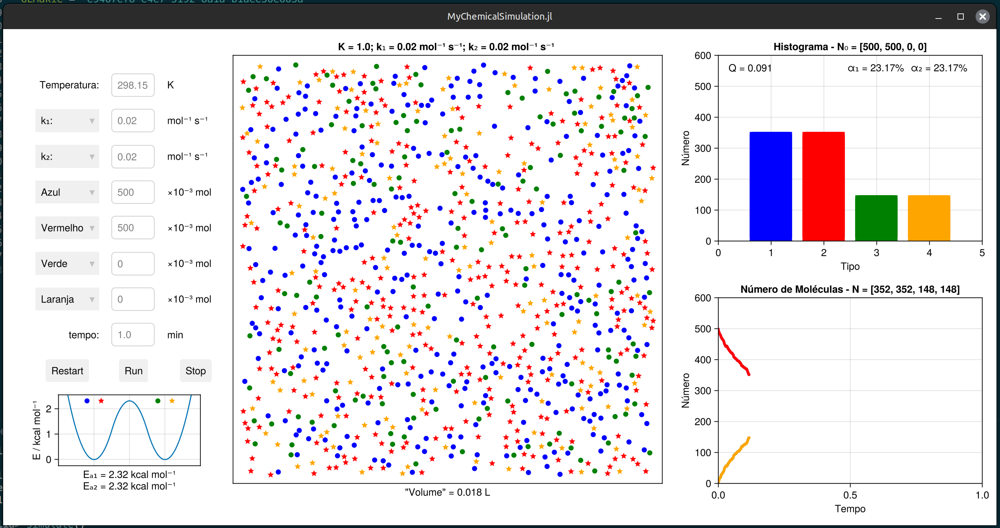

Interface
A tela do programa tem algumas partes importantes:
Painel de Controle (Esquerda):
Aqui você ajusta as condições da sua simulação.
- Temperatura (K): Define o quão "quente" ou "frio" está o sistema. Uma temperatura maior geralmente significa que as moléculas se movem mais rápido. O valor padrão é 298.15 K (25°C).
- ka e kd (mol⁻¹ s⁻¹): São as constantes de velocidade da reação.
- k₁: Controla a velocidade da reação direta (A + B → C + D).
- k₂: Controla a velocidade da reação inversa (C + D → A + B). No exemplo da imagem, ambas estão configuradas para
0.02 mol⁻¹ s⁻¹.
- Azul, Vermelho, Verde, Laranja (10³ mol): Aqui você define a quantidade inicial de cada tipo de molécula. Cada mil moléculas serão "1 mol" de moléculas. Em outras palavras, nestas simulações, o "número de Avogadro" é 1000. Ou seja, colocar 500 moléculas entrará nas contas como 0.5 mol.
- Azul (A) e Vermelho (B) são os reagentes.
- Verde (C) e Laranja (D) são os produtos.
- Tempo (min): Define por quanto tempo a simulação vai rodar. Na imagem, está configurado para 1.0 minuto.
- Botões de Ação:
- Restart: Reinicia a simulação com os parâmetros atuais.
- Run: Começa ou continua a simulação.
- Stop: Pausa a simulação.
- Gráfico de Energia (E / kcal mol⁻¹): Mostra o perfil de energia da reação. A "barreira" no meio (Eₐ) é a energia de ativação – a energia mínima que as moléculas A e B precisam ter para reagir.
Caixa de Simulação (Centro):
É o "palco" principal! Aqui você vê as bolinhas ou estrelas coloridas (as moléculas) se movendo, colidindo e reagindo.
- Bolinhas azuis são moléculas A.
- Estrelas vermelhas são moléculas B.
- Bolinhas verdes são moléculas C.
- Estrelas laranjas são moléculas D.
- A informação "Volume = 0.018 L" indica o tamanho do espaço onde as moléculas estão. O volume é indicado em litros, apesar de que na simulação o espaço efetivamente é uma área.
O tamanho da caixa é determinado automaticamente pelo número total de moléculas (de todos os tipos), de forma que a concentração total de partículas é 55,5 mol/L. Esta concentração corresponde à quantidade de moléculas de água em um litro de água pura a 298.15K. Portanto, ao aumentar o número total de partículas, automaticamente a caixa aumenta. Para variar as concentrações sem variar o volume, o número total de partículas deve ser mantido constante.
Gráficos de Resultados (Direita)
Mostram o que está acontecendo na simulação.
- Histograma - Nk: Mostra a quantidade de cada tipo de molécula (-1=Azul, 1=Vermelho, 2=Verde, 3=Laranja) em um determinado momento. O
Q = 0.701e as porcentagens (αk) dão informações sobre o equilíbrio da reação. - Número de Moléculas - N: Mostra como a quantidade de cada tipo de molécula muda ao longo do tempo. Você verá as curvas dos reagentes (azul e vermelho) diminuindo e as dos produtos (amarelo/laranja e verde) aumentando à medida que a reação acontece.